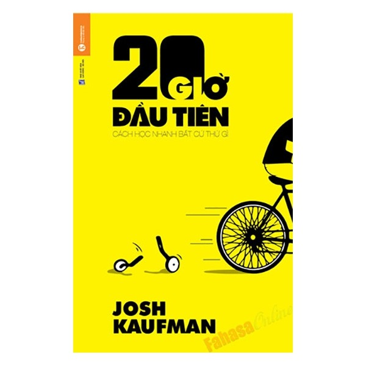
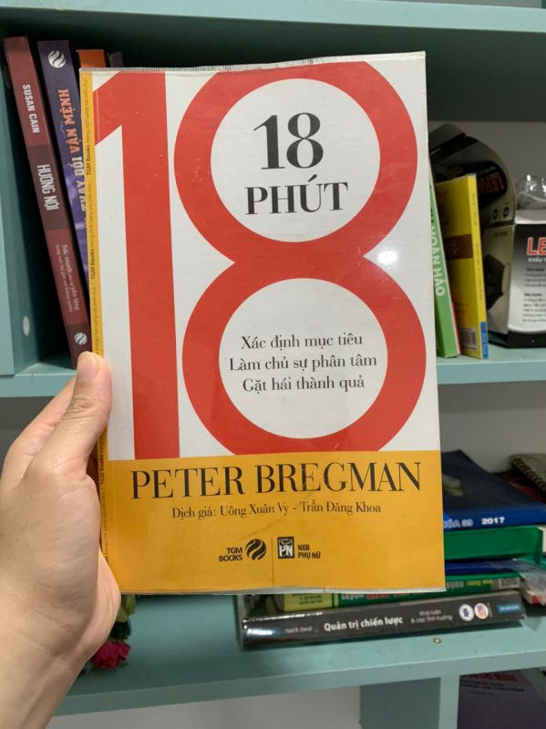

SÁCH QUẢN LÝ THỜI GIAN
5 quyển sách hay về quản lý thời gian giúp sinh viên sống trọn vẹn 24 giờ một ngày

Thời gian theo định nghĩa của Wikipedia thì chỉ có một chiều duy nhất và là hữu hạn đối với mỗi con người . Có thể sự quý giá của thời gian là như thế nào thế nhưng không phải ai cũng hiểu và sử dụng thời gian một cách đúng đắn và tối ưu nhất. Có người làm quần quật cả ngày vẫn không hết việc, mong ước có hơn 24 giờ một ngày để làm nhiều hơn nữa. Có người thích “giết thời gian” bằng các hoạt động giải trí như chơi game, tán gẫu khi không có gì làm. Vậy làm sao để sử dụng và thích ứng với thời gian một cách hiệu quả và tối ưu nhất ? Hãy cùng SinhVienTriThuc tham khảo 5 tựa sách quản lý thời gian bên dưới.
20 Giờ Đầu Tiên
Chỉ trong 64 trang đầu tiên, tác giả đã tóm lược những điểm chính để tự học bất kỳ kỹ năng mới nào. Trình bày gọn gàng, súc tích, có hệ thống và rất khoa học. Không cần phải mất 10.000 giờ như Malcom Gladwell đã đề xuất, cũng không cần thiết phải trở thành một chuyên gia. Nếu bạn muốn trau dồi thêm nhiều kỹ năng nhưng không có nhiều thời gian thì đây chính là cẩm nang dành cho bạn. Từ trang 65 trở đi là những ví dụ của cá nhân tác giả trong việc áp dụng những quy luật vào chính trải nghiệm của mình.
Có rất nhiều việc muốn làm… nhưng lại có quá ít thời gian”. Đó là chuyện thường thấy của cuộc sống hiện đại. Hãy dành một chút thời gian để xem có bao nhiêu việc bạn muốn học cách làm. Danh sách của bạn có những việc gì? Điều gì ngăn cản bạn bắt đầu? Thường là do: Thời gian và kỹ năng. Có một sự thật không lấy gì làm dễ chịu, đó là: Những trải nghiệm đáng giá nhất trong đời thường lại đòi hỏi phải có kỹ năng ở một cấp độ nào đó. Cần phải có thời gian và cần phải nỗ lực mới có được kỹ năng – mà thời gian thì chúng ta không có, còn nỗ lực lại là thứ chúng ta ngại gom góp.
Kiểm Soát Thời Gian – Chu Toàn Mọi Việc

Bạn không có đủ khả năng vừa đảm nhiệm công việc, học tập, vừa có thể có thời gian nghỉ ngơi, thư giản và vui vẻ bên gia đình bên bạn bè??? Nếu câu trả lời đa phần là có! Thì tôi khuyên bạn nên tìm tới giải pháp bên cuốn sách này. Giải quyết được vấn đề thời gian, quản lý nó một cách hiệu quả, tức là công việc của bạn được điều tiết hợp lý và trở nên hiệu quả hơn. Bạn sẽ chẳng bao giờ phải hối hận vì đã giành quá nhiều thời gian để giải trí, hay quá nhiều thời gian cho công việc, hay quá giàn trải mà vẫn chả ra đâu vào với đâu.
Tại sao chúng ta có thể làm chủ thời gian của mình trong thời kỳ khủng hoảng, nhưng lại không thể làm chủ được thời gian trong những ngày bình thường? Chính bởi sự kết hợp của bộ ba “siêu bẫy” bao quát toàn diện, từ đó hình thành nên những chiếc bẫy thời gian.
18 Phút – Peter Bregman
Cuốn sách này chủ đề hao hao giống với cuốn 80/20 nhưng nó còn giúp chúng ta dừng lại và sống chậm hơn, biết tập trung vào những thứ quan trọng với chúng ta (có thể là gia đình, bạn bè, sở thích, ước mơ…) thay vì mỗi ngày bận rộn với công việc. Đọc và chậm rãi thực hành theo chỉ dẫn, bạn sẽ bất ngờ khi thấy cuộc sống mình thay đổi rõ rệt từ lúc nào.
18 Phút mang đến cách thức làm chủ một năm, một ngày và cả một thời điểm ngắn ngủi toàn diện, để chúng ta có thể tập trung thực hiện những gì chúng ta cho là quan trọng nhất. Đó là bước tiên quyết để giành lại cuộc đời mình. Đồng thời nó sẽ giúp bạn đưa ra những quyết định thông minh và đúng đắn về những gì đáng và không đáng làm. Nó cũng mang đến cho bạn các công cụ và kỹ năng đơn giản để theo đuổi những quyết định đó, nhờ vậy bạn có thể dành thời gian cho những việc cần thiết và tránh những thứ không cần thiết.
Sức Mạnh Của Thói Quen

Đây không chỉ là cuốn sách mà Business Insider khuyên đọc mà còn là cuốn sách mà rất nhiều tỉ phú nổi tiếng đã từng đọc từ khi họ còn rất trẻ. Thiết nghĩ thói quen cũng làm nên cuộc đời mỗi người, có những điều đơn giản diễn ra hằng ngày xung quanh bản thân mà ta không để ý đến. Tất cả những điều đó đều có thể ảnh hưởng trực tiếp đến cuộc sống mỗi người. Chính vì vậy, cuốn sách này cho ta nhìn nhận lại bản thân, những thói quen mà ta cần thay đổi để trở nên tốt hơn, ít ra là chiến thắng chính bản thân mình.
Về cơ bản, người lớn và trẻ em không khác nhau là mấy. Bởi hầu hết những hành động hàng ngày của chúng ta đều là sản phẩm của thói quen vô thức. Thế nhưng không phải cá nhân, tổ chức nào cũng có được thành công. Đó là vì mỗi người có những thói quen riêng. Vậy thói quen nào mới giúp bạn thành công? Trong cuốn sách Sức mạnh của thói quen, Charles Duhigg sẽ giải đáp thắc mắc ấy.
Đời Ngắn Đừng Ngủ Dài

Sách gồm những mẩu chuyện, những lời khuyên, những đúc kết bổ ích mà tác giả gửi đến cho người đọc, giúp người đọc “điều chỉnh” lại một số mặt trong cuộc sống của mình. Những lời của tác giả giống như những lời tâm tình, ngắn gọn, cô đọng nhưng vô cùng thực tế và hữu ích. Mỗi người chúng ta chỉ có 1 cuộc sống, hãy sống hết mình, hãy dấn thân, đừng để bị chi phối bởi những tác động bên ngoài, những thói quen xấu.Đời ngắn, đừng ngủ dài, vì khi chết đi, bạn có vô khối thời gian để ngủ.
V“Mọi lựa chọn đều giá trị. Mọi bước đi đều quan trọng. Cuộc sống vẫn diễn ra theo cách của nó, không phải theo cách của ta. Hãy kiên nhẫn. Tin tưởng. Hãy giống như người thợ cắt đá, đều đặn từng nhịp, ngày qua ngày. Cuối cùng, một nhát cắt duy nhất sẽ phá vỡ tảng đá và lộ ra viên kim cương. Người tràn đầy nhiệt huyết và tận tâm với việc mình làm không bao giờ bị chối bỏ. Sự thật là thế.”